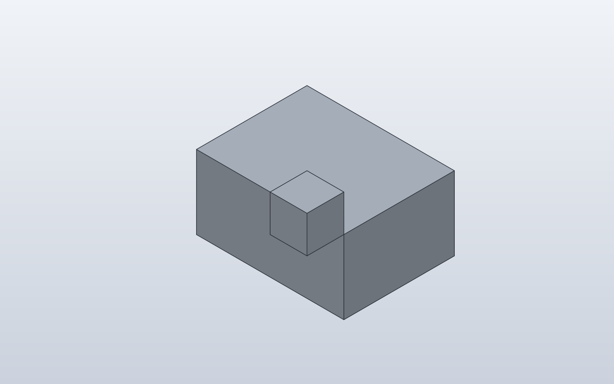
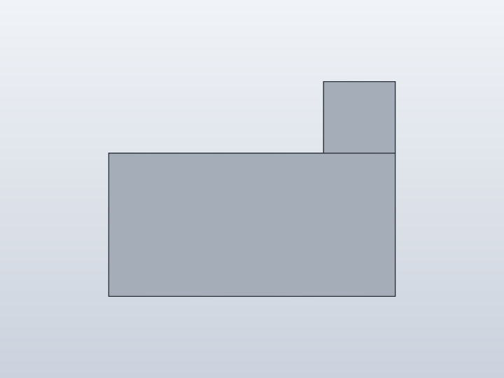
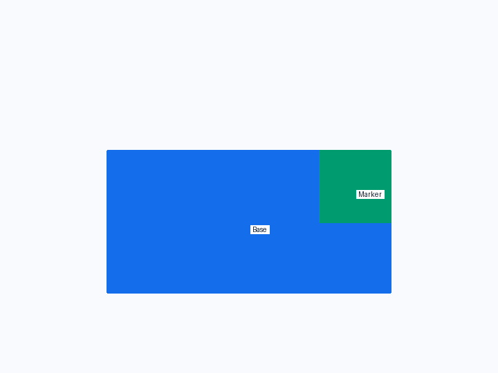
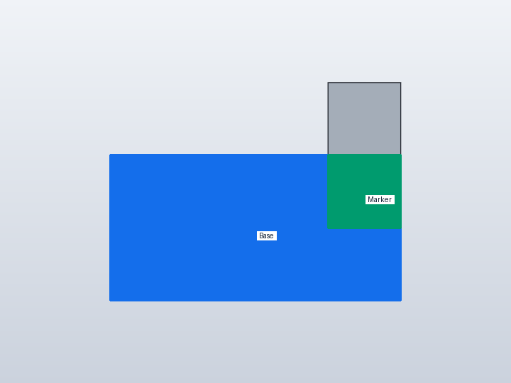
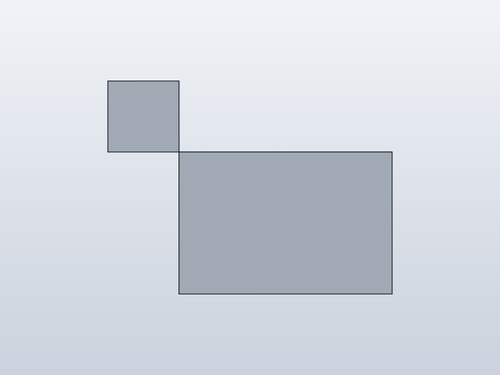
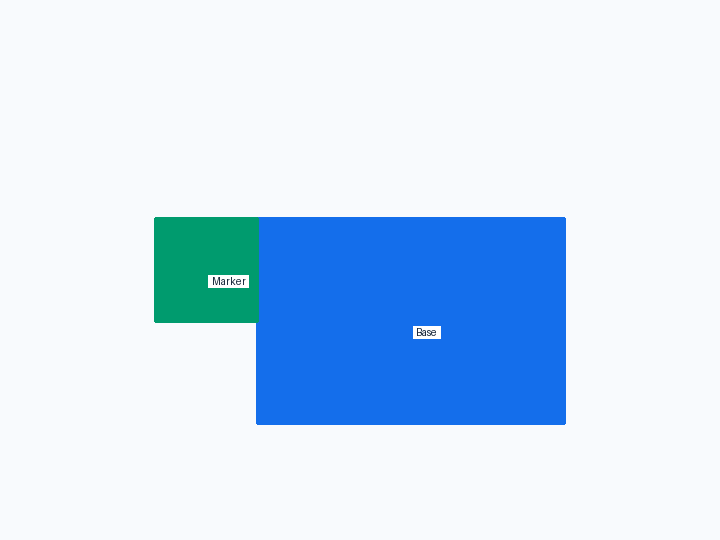
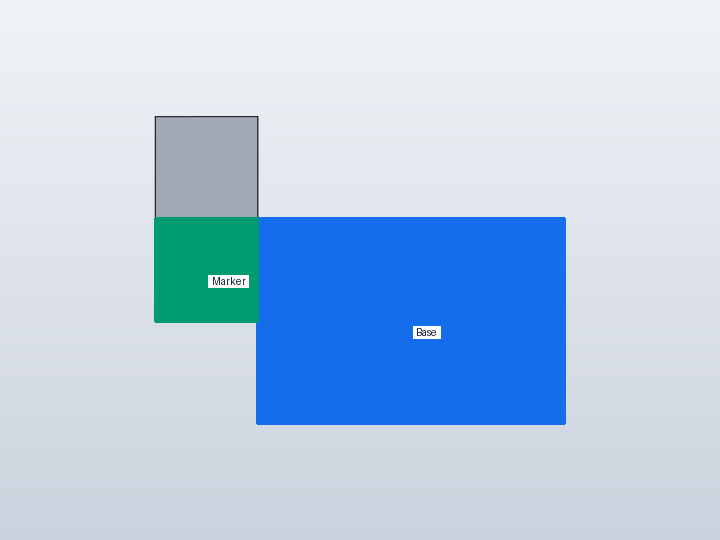
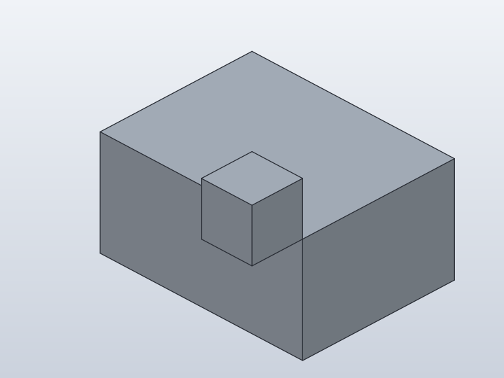
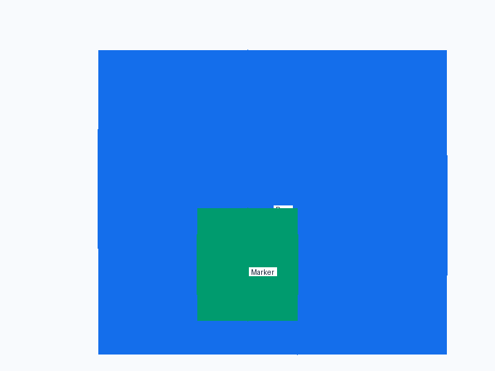
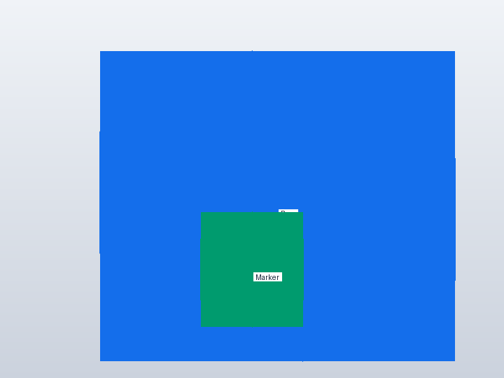

Forge qualification case
Topology-backed corner anchor
Verify a corner reference that follows both parent width and height changes.










1. Forge contract
Public API
Anchor.FRONT_TOP_RIGHT paired with child Anchor.BACK_TOP_RIGHT
Internal Forge model
A standard corner Anchor is resolved to an edge/on/corner native topology reference rather than a free point.
SolidCraft lowering
joint.create receives SolidCraft edge/on/corner picks so the saved design can re-find the corner after geometry changes.
2. Native verification
Expected result
The marker sits on the front-top-right corner of the base.
Parametric mutation
Change the base from 40x20 to 80x40 mm; the marker must follow both the new right side and new top.
Evidence
- Fixture source
- Generated command JSON
- results.json
- measurements-size-80x40.json
- measurements.json
- change-size.json
- joint-inspect.json
- model-size-80x40.sc
- model.sc
- model.step
- qualification-result.json
- validation.json
- visual-validation.json
- camera-front.json
- camera-iso.json
- camera-right.json
- Native snapshot: model.png
- Native snapshot: model-front.png
- Native snapshot: goal-front.png
- Native snapshot: overlay-front.png
- Native snapshot: model-right.png
- Native snapshot: goal-right.png
- Native snapshot: overlay-right.png
- Native snapshot: model-iso.png
- Native snapshot: goal-iso.png
- Native snapshot: overlay-iso.png


3. Results
size 80x40 · 2 bodies · measurements-size-80x40.json
Parameters
| Name | Value |
|---|---|
base_width | 80.0 |
base_height | 40.0 |
Bodies
| Body | BBox min | BBox max |
|---|---|---|
| Base | [-40, -15, 0] | [40, 15, 40] |
| Marker | [30, -25, 40] | [40, -15, 50] |
Baseline · 2 bodies · measurements.json
Parameters
| Name | Value |
|---|---|
base_width | 40.0 |
base_height | 20.0 |
Bodies
| Body | BBox min | BBox max |
|---|---|---|
| Base | [-20, -15, 0] | [20, 15, 20] |
| Marker | [10, -25, 20] | [20, -15, 30] |
Semantic validation
| Status | Level | Check | Expected | Actual |
|---|---|---|---|---|
| FAIL | Q4 | declared target geometry | [{"label": "Base", "min": [-20, -15, 0], "max": [20, 15, 20]}, {"label": "Marker", "min": [10, -25, 10], "max": [20, -15, 20]}] | [{"min": [-20.0, -15.0, 0.0], "max": [20.0, 15.0, 20.0]}, {"min": [10.0, -25.0, 20.0], "max": [20.0, -15.0, 30.0]}] |
| FAIL | Q4 | BACK_TOP_RIGHT meets parent FRONT_TOP_RIGHT | {"min": [10, -25, 10], "max": [20, -15, 20]} | {"max": [20.0, -15.0, 30.0], "min": [10.0, -25.0, 20.0]} |
| FAIL | Q5 | declared mutation target geometry | [{"label": "Board", "min": [-40, 0, 0], "max": [40, 12, 40]}, {"label": "right Marker", "min": [30, -10, 30], "max": [40, 0, 40]}, {"label": "left Marker", "min": [-40, -10, 30], "max": [-30, 0, 40]}] | [{"min": [-40.0, -15.0, 0.0], "max": [40.0, 15.0, 40.0]}, {"min": [30.0, -25.0, 40.0], "max": [40.0, -15.0, 50.0]}] |
| FAIL | Q5 | declared mutation target geometry | [{"label": "Base", "min": [-40, -15, 0], "max": [40, 15, 40]}, {"label": "Marker", "min": [30, -25, 30], "max": [40, -15, 40]}] | [{"min": [-40.0, -15.0, 0.0], "max": [40.0, 15.0, 40.0]}, {"min": [30.0, -25.0, 40.0], "max": [40.0, -15.0, 50.0]}] |
| FAIL | Q5 | corner follows 80x40 mutation | {"min": [30, -25, 30], "max": [40, -15, 40]} | {"max": [40.0, -15.0, 50.0], "min": [30.0, -25.0, 40.0]} |
4. Generated native relationship/command path
[
{
"command": "joint.create",
"params": {
"type": "rigid",
"name": "Attach Marker:1 to Base:1",
"a": {
"occurrence": "Base:1",
"edge": [
20.0,
-15.0,
10.0
],
"on": [
0.0,
-15.0,
10.0
],
"corner": [
20.0,
-15.0,
20.0
]
},
"b": {
"occurrence": "Marker:1",
"edge": [
20.0,
-15.0,
15.0
],
"on": [
15.0,
-15.0,
15.0
],
"corner": [
20.0,
-15.0,
20.0
]
}
}
}
]5. Reference models
These comparisons clarify concepts; Forge does not promise API compatibility with them.
- BOSL2: BOSL2 supports side/edge/corner anchors; its anchor also carries orientation, which is a useful design reference for Forge.
6. Fixture source
class Base:
width = 40.0
height = 20.0
def build(self):
return Box(self.width, 30, self.height)
class Marker:
def build(self):
return Box(10, 10, 10)
class CornerAnchor:
base_width = 40.0
base_height = 20.0
def build(self):
base = Base(
width=self.base_width,
height=self.base_height,
)
marker = Marker().attach(
base,
parent=Anchor.FRONT_TOP_RIGHT,
child=Anchor.BACK_TOP_RIGHT,
)
return base + marker
CornerAnchor()